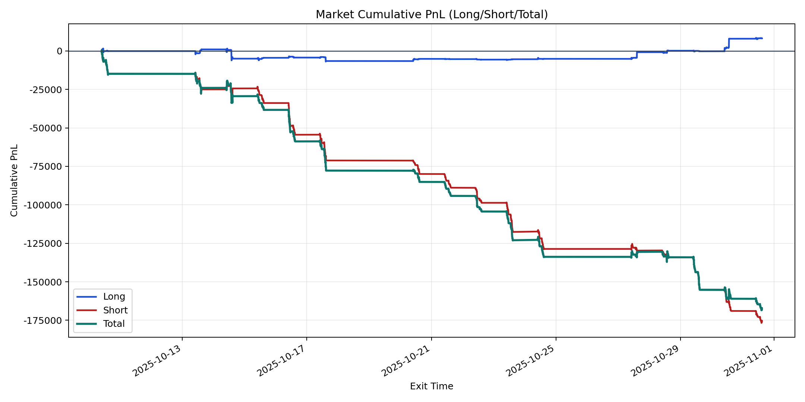
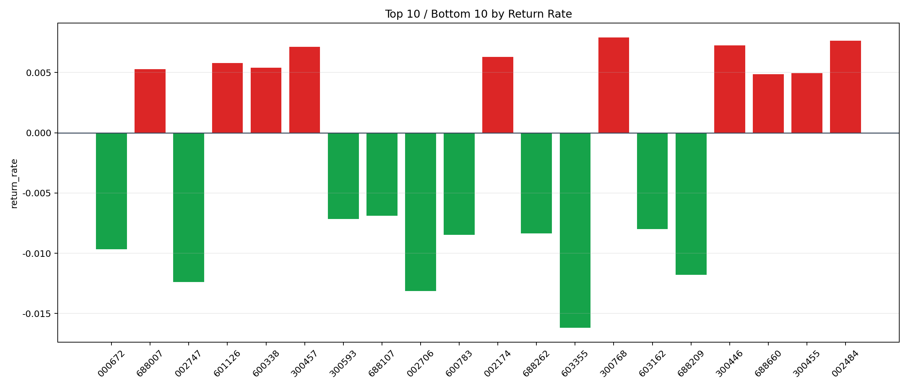

| repo_root | /home/haoranyou/data/output/alpha0.4_1w_5s_3ticks_index_filter/index_weights_1000 |
|---|---|
| period_months | 1 |
| period_label | 2025-10-10_to_2025-10-31 |
| start_time | 2025-10-10 09:50:12 |
| end_time | 2025-10-31 14:45:02 |
| n_trades | 17129 |
| n_symbols | 271 |
| total_pnl | -167167.1143999999 |
| long_total_pnl | 8206.645349999992 |
| short_total_pnl | -175373.7597499999 |
| total_entry_notional | 162768168.0 |
| long_entry_notional | 19473605.0 |
| short_entry_notional | 143294563.0 |
| total_return_rate | -0.0010270258395978255 |
| long_return_rate | 0.00042142404295455267 |
| short_return_rate | -0.0012238689038746007 |
| top_symbols_by_return | ["300768", "002484", "300446", "300457", "002174", "601126", "600338", "688007", "300455", "688660"] |
| bottom_symbols_by_return | ["603355", "002706", "002747", "688209", "000672", "600783", "688262", "603162", "300593", "688107"] |

